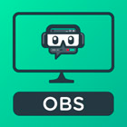
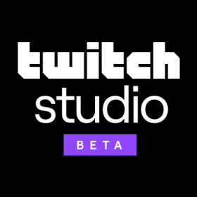
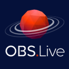

📷 Transmita enquanto joga 📷
• Esses são alguns dos programas para realizar transmissões.
Aplicativos de transmissão:

• Streamlabs OBS
Streamlabs OBS é grátis, tem o código aberto e é um jeito fácil de começar a transmitir. O aplicativo foi
construído em
cima do OBS com um monte de recursos empolgantes: máscaras faciais, widgets e chat integrados, encoders
específicos para
jogo e milhares de sobreposições e temas grátis.
• Open Broadcaster
Software grátis e open source para gravação e transmissão ao vivo. O código-fonte está disponível para que
todos possam
contribuir.

• Beta Twitch Studio
Nosso software de transmissão gratuito foi desenvolvido do zero para novos streamers que querem um processo de
configuração mais simples e transmissões de alta qualidade. Com uma configuração guiada, integração com a Twitch
e
diversas opções de personalização, o Twitch Studio facilita mais do que nunca o início e gerenciamento de canais
da
Twitch.
• Lightstream Studio
Transmissões ao vivo profissionais pelo seu navegador. Crie seu layout ideal. Traga convidados à distância.
Possibilidades criativas avançadas, facilmente acessíveis para todos.

• OBS.Live
O OBS.Live é um complemento para transmissões gratuito do OBS Studio de StreamElements (possui suporte para
V23). O
OBS.Live facilita o gerenciamento de transmissões, integrando o chat da Twitch, seu feed de atividades e
solicitação de
mídia diretamente ao OBS. Outros recursos incluem nomes personalizados para bots, atalhos e leaderboards.
• Player.me
Aplicativo multifuncional grátis e fácil de usar para transmissão e gravação. Inclui milhares de
sobreposições
projetadas profissionalmente com alertas, um painel de controle de transmissão para acompanhar eventos, chat
da
transmissão ao vivo e comutação de cena.

• XSplit Broadcaster
O XSplit é um conjunto de aplicativos gratuito, altamente personalizável e poderoso, usado na realização de
transmissões
na Twitch. Seja para criar uma transmissão ao vivo ou editar/carregar clipes, é fácil começar a usá-lo.
Ferramentas de transmissão:
• Streamlabs
Aumente o nível das suas transmissões com alertas, doações e mais de 20 widgets interativos.
• StreamElements
Um pacote completo para todas as suas necessidades de transmissão: Bot, Sobreposições, Pontos de
Fidelidade, Sorteios e
muito mais para streamers novos e veteranos.
• Muxy
Muxy fornece alertas, dicas, feed em tempo real, visualizações de Cheers e analytics da transmissão.
• OperaEvent
Opera Event é uma plataforma para armar os streamers com a habilidade de engajar, crescer, melhorar e
monetizar sua
audiência.